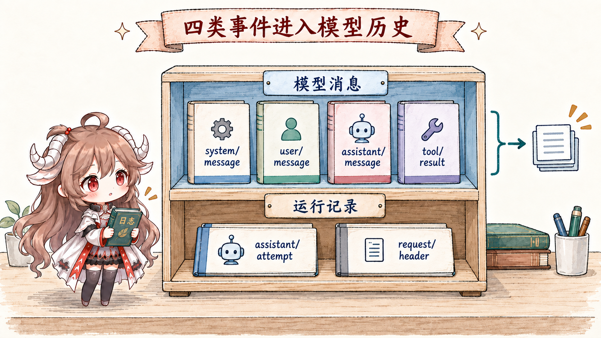
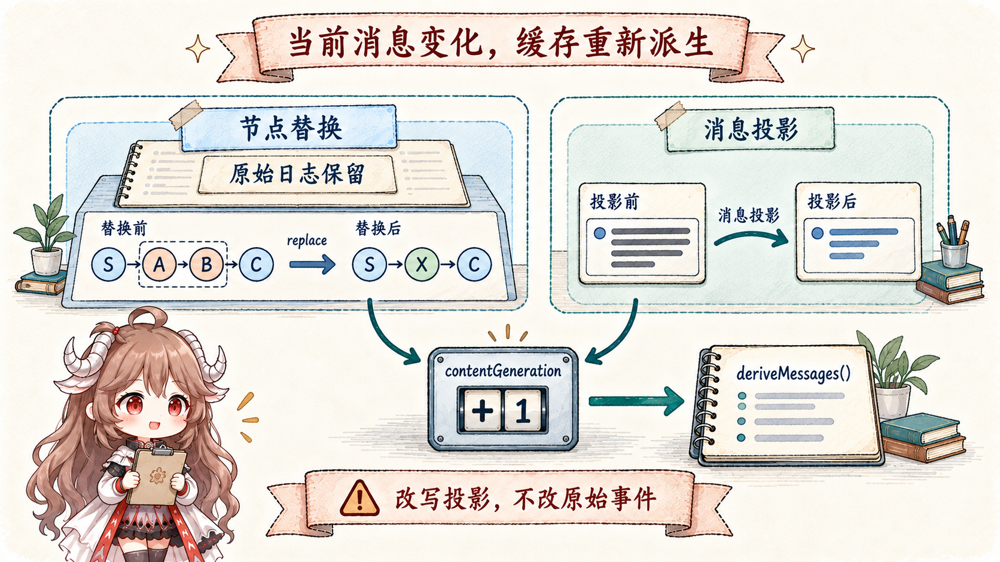
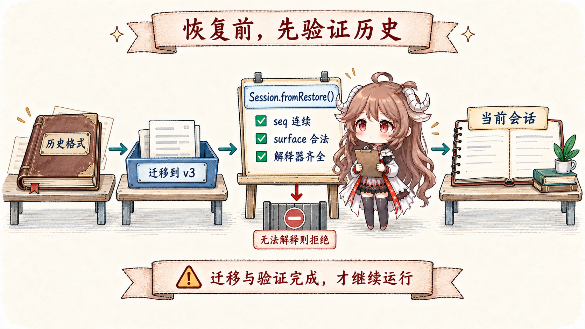

很多 Agent 系统一开始只有 messages.push()。工具状态、token、approval、重试和 UI 进度随后被塞进旁边的 Map；需要恢复时，再猜哪些 Map 能从 messages 重建。DSH 反过来：先把运行事实写入追加日志，模型消息只是其中一个投影。
这不是为了把简单系统复杂化，而是因为一次 turn 同时服务三类消费者。模型需要规范的 system/user/assistant/tool messages；人类时间线需要看见原始对话和工具过程；恢复路径还需要 turn/step 边界、request header、错误与 lineage。让它们共用一个数组，迟早会让某个消费者得到多余或缺失的事实。
阅读契约。读完以后，你应该能说明：append() 提交前后分别保证什么；为什么四种消息事件需要声明 surfaceOp；replace 为什么遮蔽模型表面却不删除原始日志；人类 transcript 为什么不能直接读取 current surface；以及未知事件、sourceEventSeqs 和 session/end-seed 如何让恢复失败得更安全。
证据边界。本文固定在提交 ddefc45。当前逻辑格式为 v3。Session 根包负责追加、surface 验证和 seed 接纳；持久化、格式迁移与插件消息投影各有明确接口。下文区分内存提交、持久化完成与实时流帧，不把其中一个当成另外两个的保证。
一、Session 是追加事实源，不是可编辑 transcript
1.1 append 先快照，再验证，最后一次提交
Session.append() 不把调用方传入的对象引用直接塞进 log。它先把 data、surface metadata 和 sourceEventSeqs 做 lossless JSON 快照，给候选事件分配连续的 seq 与时间戳并冻结，再验证 marker、引用和 replacement coverage。SurfaceManager 先验证并规划 transition；检查通过后事件才进入私有 log，surface 随后按已接纳的日志增量折叠。验证失败不能留下半条事件或半次替换。
通过 append() 接纳的事件与嵌套 message 会被深冻结。调用方不能事后修改 content block，悄悄改变模型历史。改变模型输入要追加明确的 replacement，或追加由已注册解释器处理的消息投影事件。旧的 session.events 已不再是接口；snapshotEvents() 虽仍返回稳定快照，也已标记 deprecated，新生产逻辑应使用查询或投影接口，而不是逐次扫描整份日志。
下面展示调用形状：message、summary 是已构造的消息，端点是当前节点的 SessionSeq，shadowedSeqs 覆盖全部被替换节点。
session.append('user/message', message, {
surfaceOp: 'append',
})
session.append('user/message', summary, {
surfaceOp: { op: 'replace', startSeq, endSeq },
sourceEventSeqs: shadowedSeqs,
})1.2 通知发生在 commit 之后，观察者失败彼此隔离
Attached Session 提交完成后才发出 session/event。每个 listener 独立 containment：一个遥测或 UI listener 抛错，不会让已提交事件从 log 中消失，也不会阻止其他 listener 观察。Reentrant append 则被拒绝，避免 observer 在同一次通知栈里递归改写事件顺序。
持久化 listener 可以做 write-behind，但真正需要耐久语义的生产者还必须显式等待 ctx.sessions.flush(session)。下一篇会讨论这个 observation barrier；在 Session 本身看来，append 负责原子内存事实，flush 才负责等待外部镜像。
二、事件词汇把内容、执行与诊断分开
2.1 四种消息事件进入 surface，流帧单独结算

SurfaceEventType 包含 system/message、user/message、assistant/message、tool/result。四者都必须声明 surfaceOp。系统提示词因此也属于可恢复的模型历史：loop 在首条用户消息前写入第一个 system 节点；request/header 只保存调用配置、工具 schema 与适配器默认值，不能再携带 header.system。
一次回答正在流式输出时，界面消费的是 agent/assistant-stream 实时帧，日志不再为每个 chunk 追加独立事件。一次尝试结束后，成功输出结算为 assistant/message，失败或准备重试且没有提交消息的尝试结算为 assistant/attempt；两者都内嵌保留时序和 delta 边界的 stream。取消时若已有文本或 reasoning 前缀，则可提交带 interrupted: true 的部分消息，尚未派发的工具调用不进入它。
界面已经显示几个字，不等于这些字已经持久化。实时帧先供显示，结算事件才进入 Session，之后仍需持久化屏障。assistant/attempt、turn/step 边界、tool/call 与请求记录本身不直接派生消息；其中 tool/call 表示记录了调用入口，并不证明工具成功甚至已产生外部效果。
把一次“先失败、再成功”的请求重试压成记录形状，三条通道的区别会更清楚：
实时显示：attempt 1 的帧 → attempt 2 的帧
Session：assistant/attempt { stream: … }
assistant/message { message: …, stream: … }
模型历史：只接纳已提交的 assistant/message
持久化：由 flush 等待上述 Session 记录写入2.2 sourceEventSeqs 把产物连回来源
system/message、user/message 与 tool/result 可以通过 sourceEventSeqs 引用来源。Compaction replacement 必须引用所有被遮蔽 surface nodes，tool result rewrite 也要引用原结果。引用必须非空、唯一且只指向更早 seq；replacement 不得漏掉覆盖范围里的节点。assistant/message 则内嵌自己的原始 stream，明确禁止顶层 sourceEventSeqs，不再用 chunk 事件编号拼接来源。
这不是通用 DAG 系统，而是一条窄 provenance 线：当日志保留 raw source 和 canonical product 时，审计者可以确认“这条 message/summary 从哪些事件产生”，恢复器也能拒绝一条声称替换范围却未完整引用来源的记录。
三、Surface 是当前模型历史的有序投影
3.1 append 扩展尾部，replace 遮蔽连续区间

SurfaceOp 只有两种形状：'append'，或 { op: 'replace', startSeq, endSeq }。Replace 的 startSeq/endSeq 必须都是当前 surface node，并构成顺序正确的闭区间；新事件进入该位置，被覆盖的 seq 只从 surface nodes 中移除，仍留在 SessionEvent[]。
每次 replacement 同时增加 replaceGeneration 与 contentGeneration；插件只改变消息内容、不改变节点集合时，只增加后者。普通 append 仍走增量尾部路径，deriveMessages() 则以 contentGeneration 为重建依据。否则节点位置虽然没动，模型却可能继续读到旧内容。
系统提示词还有一条位置约束：当 surface 的第 0 个节点是 system/message，覆盖它的 replacement 也必须是 system 事件，且只能覆盖该节点。后续追加的 system 节点没有这项保护。是否在历史尾部追加非空的新提示词，由当前已绑定模型路由的 systemPromptUpdate: 'in-history' 能力和请求系列决定；不支持时需要归并到首个 system 节点，清空提示词则要把所有仍生效的 system 节点逐个替换为空。SystemPromptProjection 负责这些实际写入，而不是由 UI 原地改文本。
3.2 人类 transcript 与模型 surface 故意不同
假设一段十轮历史被 summary replacement 遮蔽。模型下一步应该只看到 summary 与较新消息；人类已经看过的十轮对话却不应该从 UI 时间线消失。Session 因而提供 isAppendSurfaceEvent()：人类 transcript 从 append-origin events 构建，replacement copies 只改变 model-facing surface。
这条边界防止一个常见 UX 错误：把 compaction 当成删除聊天。原始事件仍是事实源；surface 是“现在发给模型什么”的策略结果，而不是“历史上发生过什么”的唯一答案。
四、deriveMessages 是一条受约束的增量缓存
4.1 每个新 surface node 只投影一次
deriveMessages() 记住已处理 nodes 数量和 contentGeneration。该 generation 未变时，只遍历新尾部；返回的新数组共享深冻结 Message 对象。后续 append 不会让调用者先前保存的数组偷偷增长。未改变的消息可以复用原数据；插件产生的投影内容则是不可变派生副本，保留原消息身份。
空 content 的 assistant/message 可以只承载 max-token usage；空 system/message 则记录该位置没有系统指令。两者都投影为 null。普通消息则原样通过：direct prompt、synthetic injection 与 goal round 都是 user/message，真正区分它们的是 typed source，不是 projection 额外包一层含糊字符串。
4.2 插件改变消息内容，也必须留下可重放决定
例如工具结果仍占据同一个 seq，但裁剪插件希望模型只读其中一部分。插件不能直接改写原结果，而要声明消息投影事件，并用 registerMessageProjection() 注册纯解释器。Session 在接纳决定前调用它验证来源与输出，再缓存保持身份的消息副本。
这条路径保持 surface.nodes 不变，却会使内容缓存失效。缺少解释器时，append 和 restore 都拒绝该事件；卸载已被使用的解释器后，缓存读取同样会被阻止。因此保存“裁剪完成”还不够，恢复时必须能解释当时究竟怎样改变了模型消息。
4.3 “Model-visible means logged” 也有反向约束
它不只是说“写日志很重要”，而是双向规则：
- 想进入模型 history 的内容，必须是已提交的 surface event；局部 prompt buffer 不是可靠历史。
- 已写入日志的内容不一定进入模型；只有 current surface 上的四类 message event 才提供消息，并叠加已记录的消息投影。
- system 来自 surface；tools、provider/model 配置与 adapter defaults 来自
request/header。request/context记录路由能力，不参与 header 相等性或请求重建，也不能代替当前 prepared call 的能力判断。
五、恢复不是 JSON parse，而是拒绝错误世界
5.1 Seed 必须是可验证的当前格式前缀

Session.fromRestore() 接纳持久化层交付的、独立拥有或已深冻结的 seed，验证运行必需字段、事件封装、连续 seq、surface 转移和 header。它不再对全部事件重复复制和冻结，内嵌 assistant stream 也留给流消费者或存储校验器检查。相比之下，普通 Session.create() 的 seed 仍走完整快照路径。调用者必须满足传入数据的所有权约定，不能把可变共享对象伪装成已准备好的恢复数据。
一个事件若类型未知且没有 ignorable: true，恢复必须拒绝；需要消息投影却没有对应解释器时也一样。可忽略未知事件仍留在日志中，只是不改变 surface，不能把“可跳过解释”理解为删掉原记录。
SESSION_FORMAT_VERSION 当前为 3。Session 只接纳当前 shape；内置格式目录 在读取存储时提供相邻的 v0→v1→v2→v3 迁移。历史 stream 和 system 字段先变成当前语义，再构造 Session；未来版本或缺失迁移路线应拒绝读取，不能仅修改 header.version 后继续执行。
5.2 session/end-seed 划清恢复历史和本次生命周期
新 fork 子会话在精确的继承前缀之后写入带 inherited: true 的 session/end-seed；恢复保留该继承分界，并在需要时追加普通生命周期 marker（若 seed 已以 marker 结束则不重复追加）。它不是在线心跳，而是一个位置标记：之前的事件来自 constructor seed，之后才是当前 live lifecycle 产生的记录。Compaction 等独立 bracket 可以用它判断未闭合 start 是旧生命周期的 crash tail，还是本次进程正在进行的工作。
Session 的 invariant companion 还重放 seq、turn/step enclosure 与同 step tool pairing。根包始终执行结构和 surface 验证；关系 invariant 作为插件补强执行轨迹，两层不会互相代替。
六、这套状态模型带来的工程判断
- 不要把 UI store 当真相。UI 可以消费更多事件，但恢复与模型 history 必须回到 Session。
- 不要原地编辑 message。修改节点应追加带 provenance 的 replacement；只改变消息内容则记录可重放的插件投影决定。
- 不要把 raw log 全塞给模型。边界、失败尝试及其 stream、usage 和 request header 是恢复/诊断事实，不是独立对话消息。
- 不要用 current surface 画人类历史。它会正确地隐藏 compaction 旧节点，却让用户误以为历史被删除。
- 不知道某个新事件是否可跳过，就默认 required。过度拒绝只是升级成本，错误跳过可能在残缺状态上继续执行。
下一篇会接上这份 append-only log，讨论它怎样越过进程边界：write-behind、flush checkpoint、approval、sandbox 与 crash repair 如何共同决定一个工具调用可不可以安全继续。
参考源码
- dsh-session README：事件源、surface、模型体验、恢复与扩展点。
- Session：append、fromRestore、deriveMessages 与 store 生命周期。
- surface.ts 与 types.ts：SurfaceOp、projection 与 provenance 验证。
- invariant.ts：seq、turn/step 与 tool pairing 关系检查。